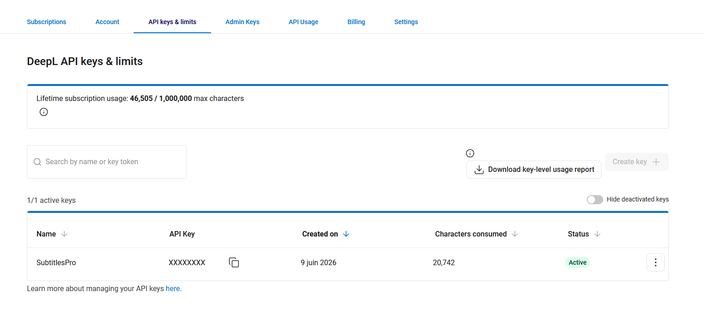
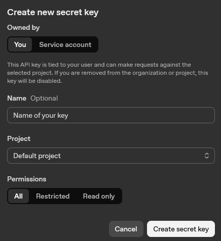
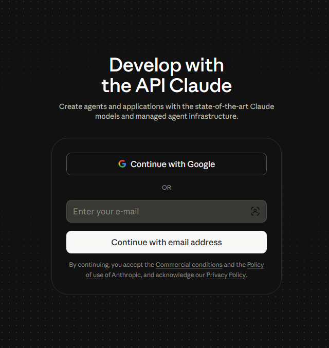
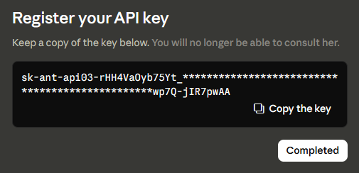
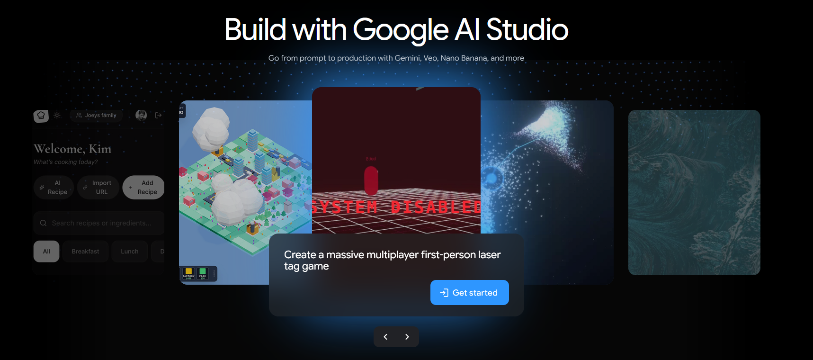

Übersetzungsanbieter
DeepL
Verwendungszweck: hochwertige maschinelle Übersetzung (mit einstellbarem Formalitätsgrad).
- Registrieren Sie sich für die API unter https://www.deepl.com/pro-api. Wählen Sie auf der Tarifkarte Developer
Sign up for free. DeepL fordert Sie auf, Ihre E-Mail-Adresse zu bestätigen und anschließend Ihre Zahlungskarte
überprüfen zu lassen. Die Kartenprüfung dient zur Bestätigung des Kontos; für den Developer-Tarif fallen jedoch keine Kosten an.
Der kostenlose Developer-Tarif umfasst ein einmaliges Guthaben von 1.000.000 Zeichen.

- Öffnen Sie https://www.deepl.com/your-account/keys (Account ▸ API Keys) und kopieren Sie Ihren
Authentication Key.

- Fügen Sie ihn in SubVox Pro ein (Settings ▸ DeepL). SubVox Pro wählt automatisch den passenden API-Endpunkt für Free oder Pro aus.
Hilfe: https://support.deepl.com/hc/en-us/articles/360020695820-API-key-for-DeepL-API
Google Cloud Translation
Verwendungszweck: maschinelle Übersetzung.
- Öffnen Sie die Google Cloud Console unter https://console.cloud.google.com und erstellen oder wählen Sie ein Projekt. Neue Google-Cloud-Konten erhalten 300 $ Testguthaben (90 Tage), und Cloud Translation umfasst 500.000 kostenlose Zeichen pro Monat. Auch für die kostenlose Tarifstufe ist ein Abrechnungskonto erforderlich.
- Suchen Sie unter APIs & Services ▸ Library nach Cloud Translation API und klicken Sie auf Enable.
- Klicken Sie unter APIs & Services ▸ Credentials auf Create credentials ▸ API key. Kopieren Sie den Schlüssel (und beschränken Sie ihn optional auf die Cloud Translation API).
- Fügen Sie ihn in SubVox Pro ein (Settings ▸ Google Translate).
Tipp: Richten Sie eine Kontingent- oder Budgetwarnung ein, um Überraschungen zu vermeiden, sobald das Testguthaben aufgebraucht ist.
OpenAI
Verwendungszweck: Spracherkennung, LLM-Übersetzung (einschließlich der Übertragung von Wortformatierungen zwischen Sprachen) und Vertonung durch Sprachsynthese. Ein Schlüssel deckt alle drei Bereiche ab.
- Erstellen Sie ein Konto unter https://platform.openai.com oder melden Sie sich mit einem bestehenden OpenAI-Konto an.

- Öffnen Sie in der Seitenleiste Ihres Projekts API Keys.

- Klicken Sie auf Create new secret key.

- Geben Sie dem Schlüssel bei Bedarf einen Namen, lassen Sie das richtige Projekt ausgewählt, wählen Sie die benötigten Berechtigungen und
klicken Sie anschließend auf Create secret key.

- Kopieren Sie den Schlüssel sofort. OpenAI zeigt den vollständigen geheimen Schlüssel nur einmal an; nach dem Schließen dieses Dialogfelds
können Sie ihn nicht erneut einsehen.

- Laden Sie unter https://platform.openai.com/settings/organization/billing/overview Prepaid-Guthaben auf.
Sie können auch das Kontomenü öffnen, zu Organization settings oder Profile settings wechseln und anschließend
in der Seitenleiste der Einstellungen Billing auswählen.


- Klicken Sie in der Übersicht Billing auf Add to credit balance. API-Aufrufe werden von diesem Guthaben abgebucht.

- Geben Sie den aufzuladenden Betrag ein, wählen Sie eine Zahlungsmethode oder fügen Sie eine hinzu und klicken Sie auf Continue. Der auf der Plattform angezeigte
Mindestaufladebetrag beträgt in der Regel 5 $.

- Fügen Sie den geheimen Schlüssel in SubVox Pro ein (Settings ▸ OpenAI). Wählen Sie das Modell im Übersetzungsfenster. Wählen Sie für die Vertonung auf der Registerkarte Text-to-Speech OpenAI als Anbieter und anschließend das Modell: gpt-realtime-2.1-mini (10 Stimmen, befolgt voice direction), das über die Realtime-API verwendet wird. Bestehende Modellauswahlen werden automatisch migriert. Für die nicht mehr verfügbaren Stimmen fable, nova und onyx müssen Sie eine neue Stimme auswählen. Realtime erhält die Anweisung, das Skript wortgetreu vorzulesen; prüfen Sie die erzeugten Dialoge. Die Realtime-Audioausgabe kostet etwa 0,024 $/Minute, zuzüglich Text-Token (0,60 \(für Eingabe / 2,40\) für Ausgabe pro Million). Die Batch-Kostenschätzungen berücksichtigen Audio und Text auf Basis von 14 Zeichen/Sekunde und 4 Zeichen/Token; voice direction und Sprechtempo können den abgerechneten Betrag beeinflussen. Wählen Sie für die Transkription auf der Registerkarte Speech-to-Text OpenAI und anschließend das Modell.
Transkriptionsmodelle – lesen Sie dies vor der Auswahl.
gpt-transcribe: das aktuelle Modell für Audioaufnahmen. Die API gibt Text ohne Wortzeitstempel zurück; SubVox Pro schätzt die Zeitangaben über den gesamten Clip. Verwenden Sie eine lokale zeitliche Zuordnung von Text und Audio oder einen Anbieter mit Wortzeitstempeln, wenn präzise Zeitangaben wichtig sind.- Gespeicherte Auswahlen von
whisper-1,gpt-4o-transcribeundgpt-4o-mini-transcribewerden zugpt-transcribemigriert; dadurch entfallen die zuvor vonwhisper-1bereitgestellten Wortzeitstempel.- Die anderen Anbieter (AssemblyAI, Gladia, Deepgram, Speechmatics, ElevenLabs, Rev AI, lokales Whisper und Parakeet) liefern direkt Wortzeitstempel mit Satzzeichen: Bevorzugen Sie diese, wenn präzise Zeitangaben wichtig sind.
Der Transkriptionsendpunkt begrenzt Uploads auf 25 MB. Siehe Abkündigungen bei OpenAI.
Die Nutzungsrichtlinien von OpenAI verlangen, dass Sie Ihre Spieler darüber informieren, dass die gehörten Stimmen KI-generiert und nicht menschlich sind – beispielsweise in den Credits des Spiels oder auf der Store-Seite. TTS-Preise: https://openai.com/api/pricing
Anthropic (Claude)
Verwendungszweck: LLM-Übersetzung (einschließlich der Übertragung von Wortformatierungen).
- Erstellen Sie ein Konto unter https://console.anthropic.com oder melden Sie sich mit einem bestehenden Anthropic-Konto an.

- Kaufen Sie Nutzungsguthaben, bevor Sie die API verwenden. Anthropic ist ein Prepaid-Dienst; ohne Guthaben schlagen API-Anfragen fehl.
Die Konsole bietet einen niedrigen Einstiegsbetrag an, in der Regel 5 USD.

- Öffnen Sie in der Seitenleiste der Claude-Konsole API keys.

- Klicken Sie auf Create key.

- Wählen Sie den Arbeitsbereich, geben Sie dem Schlüssel bei Bedarf einen Namen und klicken Sie anschließend auf Add.

- Kopieren Sie den erzeugten Schlüssel sofort. Anthropic weist darauf hin, dass Sie den vollständigen Schlüssel nach dem Verlassen dieses
Bildschirms nicht mehr einsehen können.

- Fügen Sie ihn in SubVox Pro ein (Settings ▸ Claude).
Google (Gemini)
Verwendungszweck: LLM-Übersetzung und Vertonung durch Sprachsynthese (Gemini-Stimmen) – die einfachste kostenlose Option (keine Abrechnung erforderlich). Ein Schlüssel deckt beides ab.
- Rufen Sie Google AI Studio unter https://aistudio.google.com auf und melden Sie sich mit einem Google-Konto an.

- Öffnen Sie API keys direkt unter https://aistudio.google.com/app/apikey und klicken Sie anschließend auf
Create an API key.

- Geben Sie dem Schlüssel bei Bedarf einen Namen, wählen oder erstellen Sie ein Projekt und erstellen Sie anschließend den Schlüssel.

- Kopieren Sie den API-Schlüssel aus dem Detailfenster.

- Der Schlüssel erscheint anschließend in der Liste der API-Schlüssel, wo Sie ihn kopieren, die Nutzung einsehen oder später die Abrechnung konfigurieren können.

- Fügen Sie ihn in SubVox Pro ein (Settings ▸ Gemini). Wählen Sie für die Vertonung auf der Registerkarte Text-to-Speech Gemini als Anbieter: Gemini bietet 30 mehrsprachige Stimmen (Kore, Puck, Leda…) und die Schaltfläche für voice direction. Drei Modelle stehen zur Verfügung: gemini-3.1-flash-tts-preview (Standard, am natürlichsten), gemini-2.5-flash-preview-tts (bei kostenpflichtiger Nutzung zum halben Preis) und gemini-2.5-pro-preview-tts (keine kostenlose Tarifstufe – erfordert eine aktivierte Abrechnung).
Die kostenlose Tarifstufe erfordert keine Abrechnung, unterliegt jedoch Anfragelimits; die Grenzwerte der einzelnen Modelle werden in AI Studio (Seite Rate limit) angezeigt. Für Sprachsynthese gelten die strengsten Limits – nur wenige Anfragen pro Minute und pro Tag. SubVox Pro wartet und versucht es erneut, wenn Google eine Wartezeit angibt, und stoppt mit einer klaren Meldung, sobald das Tageskontingent aufgebraucht ist. Durch Aktivieren der Abrechnung im Projekt des Schlüssels werden diese Limits aufgehoben; ansonsten ändert sich in SubVox Pro nichts. In der kostenlosen Tarifstufe kann Google Ihre Prompts zur Verbesserung seiner Produkte verwenden.
DeepSeek
Verwendungszweck: kostengünstige LLM-Übersetzung (OpenAI-kompatible API).
- Erstellen Sie ein Konto unter https://platform.deepseek.com oder melden Sie sich mit einem bestehenden DeepSeek-Konto an.
- DeepSeek ist ein Prepaid-Dienst: Öffnen Sie auf der Plattform Top up und laden Sie Guthaben auf, bevor Sie die API verwenden. Ohne Guthaben schlagen API-Anfragen fehl.
- Öffnen Sie API keys (https://platform.deepseek.com/api_keys) und klicken Sie auf Create new API key. Geben Sie dem Schlüssel einen
leicht erkennbaren Namen wie
SubVoxPround kopieren Sie ihn sofort – der vollständige Schlüssel wird nur einmal angezeigt. - Fügen Sie ihn in SubVox Pro ein (Settings ▸ DeepSeek). Wählen Sie das Modell im Übersetzungsfenster.